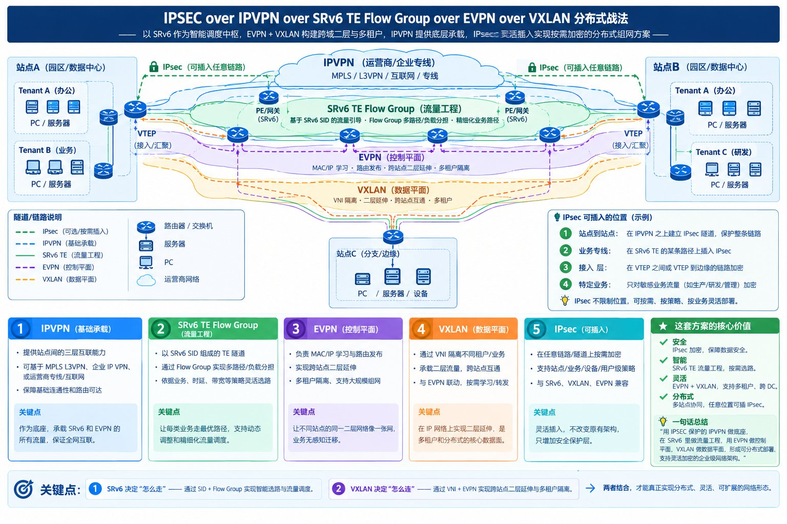

一张图拆开五层分布式组网：IPsec / IPVPN / SRv6 TE / EVPN / VXLAN
这张图的标题已经把结论写出来了：IPSEC over IPVPN over SRv6 TE Flow Group over EVPN over VXLAN 分布式战法。副标题给的分工是——SRv6 做智能调度中枢，EVPN + VXLAN 构建跨二层与多租户，IPVPN 提供底层承载，IPsec 按需插入提供加密。我按图从上到下拆一遍，原图放在下面，随文一起发布。
先立个规矩：凡是图上写了的，我标成图中明示；凡是根据分层位置推演、或用通用工程原理解释的部分，一律标成推断。两类内容分开摆，读起来清楚。

本文要点
- 图中明示：四层叠加——IPVPN（基础承载）、SRv6 TE Flow Group（流量工程 / 智能调度）、EVPN（控制平面）、VXLAN（数据平面）；IPsec 是可选安全层，按需插入。
- 图中明示：SRv6 决定「怎么走」，VXLAN 决定「怎么连」——前者靠 SID + Flow Group 做智能选路与流量调度，后者靠 VNI + EVPN 做跨站点二层延伸与多租户隔离。
- 图中明示：IPsec 可插在站点到站点、业务专线、接入层、特定业务四类位置，与 SRv6 / VXLAN / EVPN 兼容，不改变原有架构。
- 推断：请求与数据的具体方向按分层位置推演，并用通用转发原理解读，见第四节。
- 推断 · 图外补充：密钥管理、MTU 规划、故障切换、可观测性等工程项，在第六节和结尾用通用原理补充说明。
一、整体：四层各管一段，安全层单独插
图的标题本身就是一条叠加公式：IPsec over IPVPN over SRv6 TE Flow Group over EVPN over VXLAN。自上而下的云形框依次是（图中明示）：
- IPVPN（运营商 / 企业专线）——标注 MPLS / L3VPN / 互联网 / 专线
- SRv6 TE Flow Group（流量工程）——基于 SRv6 SID 的智能调度 · Flow Group 多路径 / 负载分担 · 精细化业务保障
- EVPN（控制平面）——MAC/IP 学习 · 路由发布 · 跨站点二层延伸 · 多租户隔离
- VXLAN（数据平面）——VN 隔离 · 二层延伸 · 跨站点隧道 · 多租户
两端站点 A、B 标为「园区 / 数据中心」，各挂着 Tenant A（办公）与 Tenant B（业务），站点 B 还多一个 Tenant C（研发），每个租户下面是 PC / 服务器；下方单独一个站点 C，标为「分支 / 边缘」，挂着 PC / 服务器 / 设备。VTEP 标为「接入 / 汇聚」，PE / 网关标了 SRv6（图中明示）。
我的读法：这四层不是并列关系，而是各管一段——承载、调度、控制、数据。IPsec 不在这四层里，图例把它写成「可选 / 按需插入」，是叠在链路上的一层安全壳。
二、五个组件各自的角色
IPVPN（基础承载）
图中卡片写的是：提供站点间的三层互联能力；可基于 MPLS L3VPN、企业 IP VPN、或运营商专线 / 互联网；承载 SRv6 与 EVPN；保障基础连通性和路由可达。关键点一栏写「作为底座，承载 SRv6 和 EVPN 的所有流量，保证全网互联」（图中明示）。
SRv6 TE Flow Group（智能调度）
图中卡片：以 SRv6 SID 组成的 TE 隧道；通过 Flow Group 实现多路径 / 负载分担；依据业务、时延、带宽等策略灵活选路。关键点：「让每类业务走最优路径，支持动态调整和精细化流量调度」（图中明示）。
EVPN（控制平面）
图中卡片：负责 MAC/IP 学习与路由发布；实现跨站点二层延伸；多租户隔离，支持大规模组网。关键点：「让不同站点的同一二层网络像一张网，业务无感知迁移」（图中明示）。
VXLAN（数据平面）
图中卡片：通过 VNI 隔离不同租户 / 业务；承载二层流量，跨站点互通；与 EVPN 联动，按需学习 / 转发。关键点：「在 IP 网络上实现二层延伸，是多租户和分布式的核心数据面」（图中明示）。
IPsec（可插入）
图中卡片：在任意链路 / 隧道上按需加密；支持站点 / 业务 / 设备 / 用户级策略；与 SRv6、VXLAN、EVPN 兼容。关键点：「灵活插入、不改变原有架构，只增加安全保护层」（图中明示）。图例里 IPsec 对应绿色虚线，写着「可选 / 按需插入」，所以它不是必选层。
三、节点与层级：谁挂在哪一层
按图里的位置关系：
- 租户侧：站点 A / B 的 Tenant A（办公）、Tenant B（业务），站点 B 额外有 Tenant C（研发），下面是 PC / 服务器；站点 C 是分支 / 边缘，下面是 PC / 服务器 / 设备。（图中明示）
- 站点接入：VTEP 标为「接入 / 汇聚」，画在站点与隧道之间。（图中明示）
- 网络侧：PE / 网关（SRv6）出现在 SRv6 TE Flow Group 那一层。（图中明示）
- 云形分层顺序：自上而下 IPVPN → SRv6 TE → EVPN → VXLAN。（图中明示）
推断：从上下位置看，VTEP 更像 VXLAN / EVPN 一侧的接入点，PE / 网关更像 SRv6 / IPVPN 一侧的边缘——按通用分层知识补全的位置判断。
四、请求与数据怎么走（本节为推断）
这一节按分层位置推演，并用通用转发原理补全，整节属于推断。
- 推断 · 同站点内：租户下的 PC / 服务器先接到本站点的 VTEP（接入 / 汇聚）——图上 VTEP 就画在站点与隧道之间。
- 推断 · 跨站点二层互通：VTEP 之间跑 VXLAN 数据平面，EVPN 作为控制平面负责 MAC/IP 学习和路由发布，从而让不同站点的同一二层网络互通。两张卡片分别写了这两件事，把它们连成一条路径是我的推断。
- 推断 · 跨站点承载：VXLAN 之上经 SRv6 TE Flow Group 选路，再由 IPVPN 承载到对端站点；图底部的「SRv6 决定怎么走」支持这一层理解。
- 推断 · 加密插入：如果启用 IPsec，会在上述路径的某个位置插入加密（位置见下一节）；图上绿色虚线跨过多条链路，加密点可按业务需要选择。
我把这条链路写成一句便于记的话：租户 PC / 服务器 → VTEP → VXLAN（数据）/ EVPN（控制）→ SRv6 TE 选路 → IPVPN 承载 → 对端站点 VTEP → 对端租户。这是按上下分层推演出来的阅读路径，用来对照图看各层位置。
五、关键通信路径：IPsec 的四个插入位置
图右侧「IPsec 可插入的位置（示例）」列了四条，要点照录（图中明示）：
- 站点到站点：在 IPVPN 之上建立 IPsec 隧道，保护整条路径。
- 业务专线：在 SRv6 TE 的某条路径上插入 IPsec。
- 接入层：在 VTEP 之间或 PE 边缘做链路加密。
- 特定业务：只对敏感业务流量（如生产 / 研发 / 管理）加密。
旁边一句：「IPsec 不限制位置，可按安全、性能、接入侧、业务灵活部署。」（图中明示）
我的理解：这四条从「整条路径」一路收到「某类业务」，颗粒度是递减的；同一张图里同时列出来，说明图中强调的是「按需选择插在哪」，而不是固定一套。推断：越靠近业务侧的插入点，保护范围越收敛、对网络其余部分的影响也越小；越靠近站点到站点，保护范围越大。具体取舍需要结合设备实现与链路条件评估。
六、安全与部署边界
安全边界（图中明示）：加密能力由 IPsec 这一可选层提供，与 SRv6、VXLAN、EVPN 兼容；图中说它「不改变原有架构，只增加安全保护层」。插入位置可按站点到站点 / 业务专线 / 接入层 / 特定业务四类选。
部署边界（图中明示）：底座 IPVPN 可基于 MPLS L3VPN、企业 IP VPN、或运营商专线 / 互联网；站点 A / B 是园区 / 数据中心，站点 C 是分支 / 边缘；VTEP 承担接入 / 汇聚，PE / 网关标了 SRv6；租户在图中按办公 / 业务 / 研发划分。
图外需要单独落实的部分（推断 · 通用工程视角）：密钥的分发与轮换、加密叠加后的 MTU 规划、链路或节点故障时的切换、SRv6 TE 与 EVPN 之间的控制面协同、以及监控与遥测。这几项是落地时绕不开的工程活，值得在选定具体实现后逐项验证。
七、设计特点与可改进点
先看设计特点（基于图中文字的归纳）：
- 分层解耦：承载（IPVPN）、调度（SRv6 TE）、控制（EVPN）、数据（VXLAN）、安全（IPsec）各管一段；图底部把它概括成「SRv6 决定怎么走，VXLAN 决定怎么连」。
- 调度与控制分离：SRv6 侧按业务 / 时延 / 带宽策略选路，EVPN 侧做 MAC/IP 学习与路由发布。
- 多租户与二层延伸：VNI 隔离 + VXLAN 二层延伸 + EVPN 跨站点同步，图中称「业务无感知迁移」。
- 安全可插拔：IPsec 不绑死某一层，四个位置按需选。
再看可改进点（以下是在图中分层基础上做的推断，属于落地视角）：
- 策略一致性：插入位置有四种，且图中说可按业务灵活部署；统一的策略编排与下发是避免多处插入出现策略漂移的关键，策略机制需要在方案里明确。
- 封装与链路开销：五层概念叠加，封装带来的 MTU 与分片需要纳入评估（工程常识层面的推断）。
- 控制面协同边界：图上分别写了 SRv6 TE 的调度与 EVPN 的学习 / 发布，两者之间的信息交互与协同接口值得进一步明确。
- 可观测性：监控、遥测与故障定位的手段需要在方案里补齐。
八、小结
图底部的关键点我原样收在这里：SRv6 决定「怎么走」——通过 SID + Flow Group 实现智能选路与流量调度；VXLAN 决定「怎么连」——通过 VNI + EVPN 实现跨站点二层延伸与多租户隔离。两者结合，才能真正实现分布式、灵活、可扩展的网络形态。（图中明示）
我自己的一句话总结：这张图讲的是「把承载、调度、控制、数据、安全拆开各管一段，再把 IPsec 当成可插拔的安全壳按需要扣上去」。
再补一层工程视角（推断 · 通用原理）：图中「按业务、时延、带宽灵活选路」落到 SRv6 TE 上，典型做法是用一串显式 SID 描述一条路径，再把不同业务流按分类规则映射到不同 SID List，多条路径编成一组就是 Flow Group 做的负载分担；路径的计算通常由控制器基于拓扑和约束完成，再下发到边缘节点。「按需插入 IPsec」在实现上，一般是先定义哪些流需要加密（按站点、租户或业务分类），匹配到的流才建立加密隧道，隧道模式把原始报文整体封装，适合站点之间；加密同时提供机密性、完整性与来源认证。还有一笔账要提前算：VXLAN 与 SRv6 叠加后封装层次变多，链路 MTU 与分片需要跟着规划。把这三点补上，再看图里的分层就好懂了——SRv6 负责挑路，IPsec 负责按需加锁，VXLAN / EVPN 负责把二层与多租户撑起来。